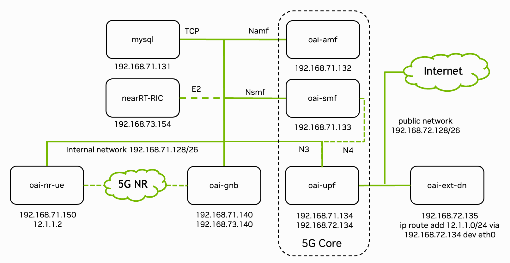

RAN Intelligent Controller (RIC) & xApps#

Fig. 33 Overview of the deployed 5G end-to-end stack with IP addresses and interfaces of each container. Figure from OpenAirInterface.#
This tutorial demonstrates how to monitor and control your 5G network using the near-real-time RAN Intelligent Controller (RIC) and xApps as specified in the O-RAN architecture [O-RAN].
We leverage OpenAirInterface’s FlexRIC [FlexRIC] implementation, which uses the E2 interface to communicate with the gNB and is already integrated into the OpenAirInterface RAN stack.
The general concept of xApps is to extend the RIC’s functionality without modifying the RAN code itself. As a simple example, we will develop an xApp that reads MCS and BLER values from the gNB using the Python API.
System Preparation#
The FlexRIC container is built automatically with the make sionna-rk command (see Quickstart). When building the FlexRIC container manually, ensure the FlexRIC container version matches your gNB container version.
Start the RIC and gNB containers with E2 interface enabled (default config):
./scripts/start_system.sh rfsim
Verify the RIC is running via
docker ps
You should see the nearRT-RIC container running.
Verify the E2 connection in the gNB logfile:
docker logs -f oai-gnb
[E2 NODE]: mcc = 262 mnc = 99 mnc_digit = 2 nb_id = 3584
[E2 NODE]: Args 192.168.73.154 /usr/local/lib/flexric/
[E2 AGENT]: nearRT-RIC IP Address = 192.168.73.154, PORT = 36421, RAN type = ngran_gNB, nb_id = 3584
[E2 AGENT]: Initializing ...
...
[E2-AGENT]: E2 SETUP-REQUEST tx
This confirms the RIC is ready to receive messages. The E2 interface configuration is defined in config/common/docker-compose.yaml.
Example: MCS Monitor xApp#
This xApp monitors the Modulation and Coding Scheme (MCS) and Block Error Rate (BLER) values from the gNB. See FlexRIC documentation and the OAI interface documentation for a detailed description of the Service Models and the xApp SDK.
The complete implementation can be found in plugins/ric_xapps/src/monitor_mcs.py:
import xapp_sdk as ric
import time
import signal
import sys
# Global variables to keep references alive and handle state
mac_handlers = []
mac_callbacks = []
last_print_time = 0
def signal_handler(sig, frame):
print("\nCleaning up...")
for handler in mac_handlers:
try:
ric.rm_mac_sm(handler)
except Exception as e:
print(f"Error removing handler: {e}")
print("Cleanup complete")
sys.exit(0)
# Define a callback class to handle MAC statistics
class MCSMonitorCallback(ric.mac_cb):
def __init__(self):
# Initialize the base class if necessary (SWIG usually requires this)
ric.mac_cb.__init__(self)
def handle(self, ind):
global last_print_time
current_time = time.time()
# Print every 2 seconds
if (current_time - last_print_time) < 2.0:
return
last_print_time = current_time
print(f"\n[{time.strftime('%H:%M:%S')}]", flush=True)
if hasattr(ind, 'ue_stats') and len(ind.ue_stats) > 0:
for ue in ind.ue_stats:
rnti = ue.rnti if hasattr(ue, 'rnti') else 0
print(f" RNTI: {rnti} (0x{rnti:04x})", flush=True)
if hasattr(ue, 'dl_mcs1'):
bler = ue.dl_bler if hasattr(ue, 'dl_bler') else 0.0
print(f" DL MCS: {ue.dl_mcs1}, BLER: {bler:.3f}", flush=True)
if hasattr(ue, 'ul_mcs1'):
bler = ue.ul_bler if hasattr(ue, 'ul_bler') else 0.0
print(f" UL MCS: {ue.ul_mcs1}, BLER: {bler:.3f}", flush=True)
else:
print(" No active UEs", flush=True)
def main():
# Register signal handlers
signal.signal(signal.SIGINT, signal_handler)
signal.signal(signal.SIGTERM, signal_handler)
# Initialize RIC
ric.init()
# Get connected nodes
nodes = ric.conn_e2_nodes()
print(f"Connected to {len(nodes)} E2 node(s)")
if len(nodes) == 0:
print("No E2 nodes found. Waiting...")
# Just wait instead of exiting, maybe nodes come up later?
# Usually conn_e2_nodes returns what's currently there.
# But let's stick to the pattern.
for node in nodes:
print(f"Subscribing to node: Global E2 Node ID: {node.id}")
cb = MCSMonitorCallback()
mac_callbacks.append(cb) # CRITICAL: Keep callback object alive
# Subscribe to MAC stats
# Using Interval_ms_1 as in original code, though we only print every 5s
handler = ric.report_mac_sm(node.id, ric.Interval_ms_1, cb)
mac_handlers.append(handler)
print("Monitoring... Press Ctrl+C to stop")
# Keep main thread alive
while True:
time.sleep(1)
Running the xApp#
xApps can connect to multiple gNBs. To keep the example general, the xApp runs in a separate FlexRIC container with the xApp SDK installed (e.g., on a remote machine). One could also run the xApp in the same container as the RIC by modifying the docker-compose.yaml file.
After starting the system, monitor the xApp logs:
docker logs -f monitor_xapp
You will see a slightly different output than the simplified example above as the default xApp runs the ZeroMQ server as explained below. If you want to run the simplified example from above, you can set the XAPP_SCRIPT environment variable to XAPP_SCRIPT=../../plugins/ric_xapps/src/monitor_mcs.py before starting the system.
Note that you may need to run iperf3 to generate traffic on the network; otherwise no slots will be scheduled for transmission and zero MCS will be reported.
ZeroMQ Integration#
In a more advanced example, we integrate a ZeroMQ server to stream MAC statistics to an external application such as the SionnaRT GUI. By default, we use port 5555 for the ZeroMQ server.
You can find the ZeroMQ server example in plugins/ric_xapps/src/zmq_stats_server.py and the client in plugins/ric_xapps/src/zmq_stats_client.py.
After starting the system, start the ZeroMQ client to subscribe to the MAC statistics:
python3 plugins/ric_xapps/src/zmq_stats_client.py
Example output:
--- UE Stats #49 (TS: 1764678434707) ---
UE 0, RNTI 64233 (0xfae9): MCS ↑28/↓13, BLER ↑0.000/↓0.000, PRBs(max) ↑106/↓10, PRBs(total) ↑106/↓10
Note that the pre-installed SionnaRT GUI automatically subscribes to the MAC statistics and displays the MCS and BLER values in the GUI. If the GUI runs on a different machine, please use port forwarding to forward the ZeroMQ server port to the GUI machine.
You can now develop your own custom xApps to implement additional monitoring and control logic for your 5G network.
References#
Robert Schmidt, Mikel Irazabal, and Navid Nikaein, “FlexRIC: An SDK for next-generation SD-RANs,” Proceedings of the 17th International Conference on emerging Networking EXperiments and Technologies (CoNEXT ‘21), pp. 411-425, 2021.